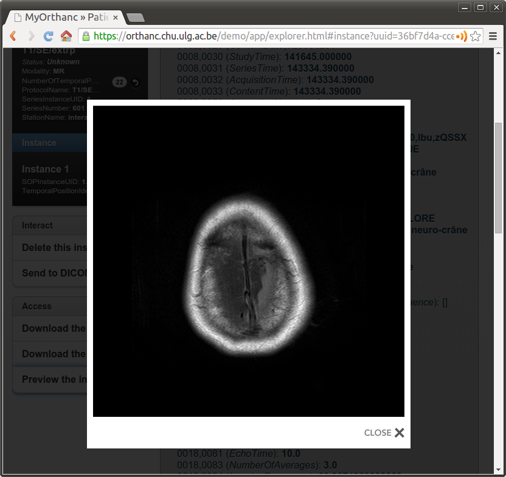
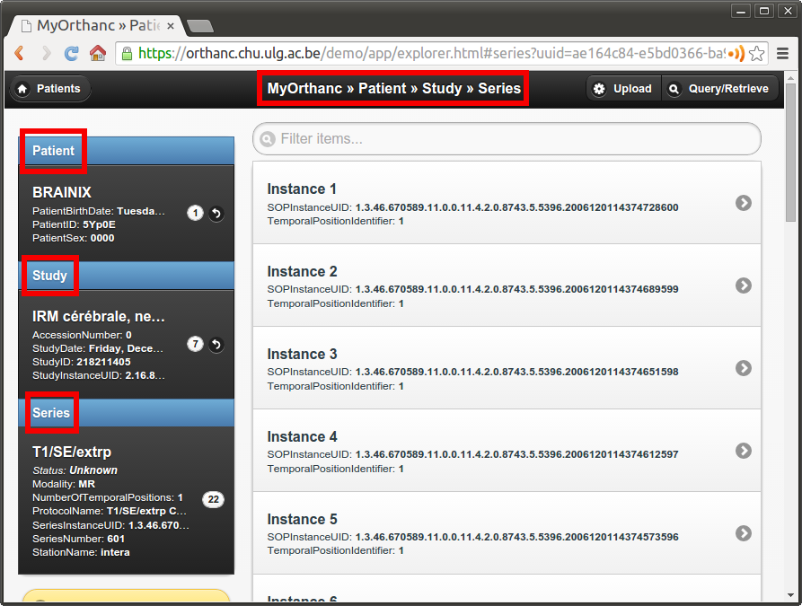
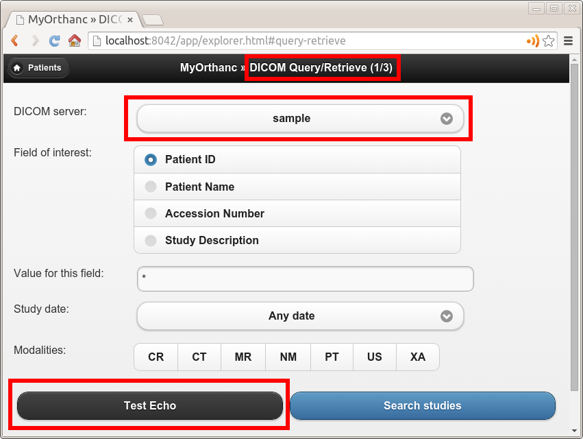
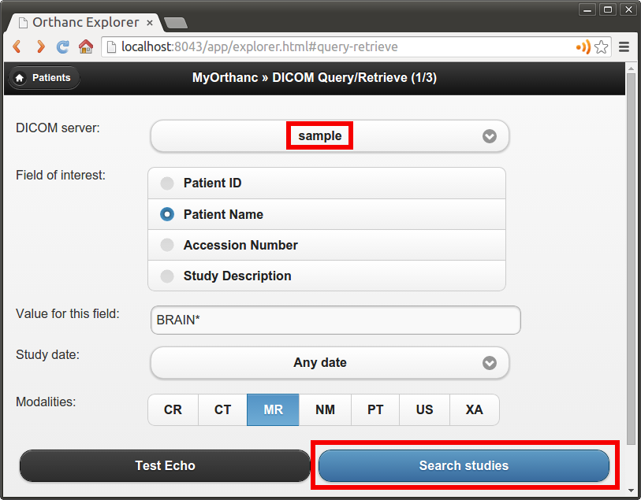
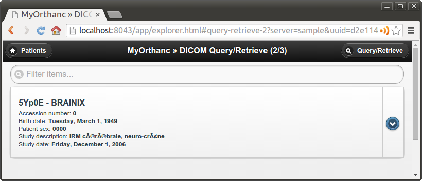
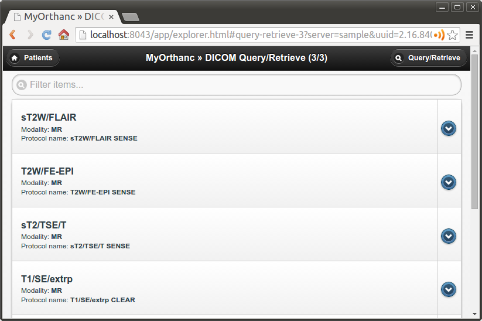
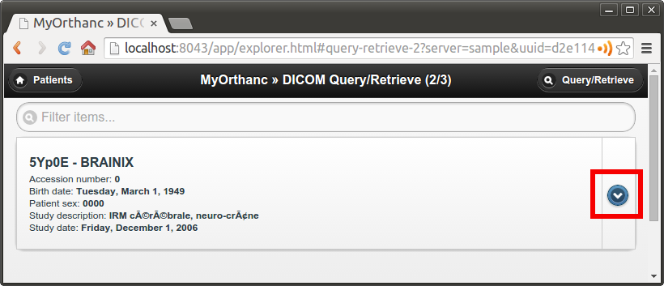
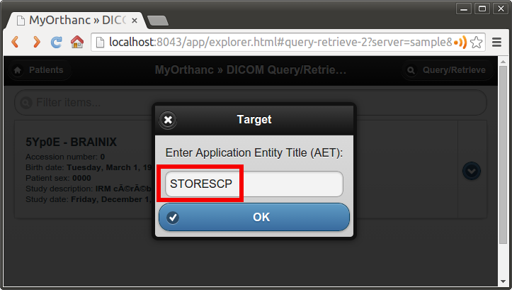

通过Orthanc理解DICOM¶
Contents
This section of the Orthanc Book provides a gentle, informal, high-level introduction to DICOM. We will try and map DICOM’s own concepts to a modern terminology that should hopefully be more easy to understand for software engineers diving for the first time into DICOM. Once the concepts of this page are understood, interested readers are invited to read a more formal textbook about DICOM, such as the so-called “Practical introduction and survival guide”, or to read the full DICOM specification.
All the DICOM concepts that are defined in this introduction are illustrated with Orthanc, a lightweight, yet powerful standalone DICOM server for healthcare and medical research. As Orthanc is free and open-source software, it is a good companion to learn DICOM.
DICOM文件格式¶
The DICOM standard can be very roughly divided in 2 parts:
- The part specifying the DICOM file format.
- The part specifying the DICOM network protocol.
The DICOM file format is the topic of the present section. It is inherently similar to well-known formats such as JPEG, PNG or TIFF. However, besides the so-called “pixel data” that encodes the medical image itself, a DICOM file also embeds medical information.
DICOM tags号¶
The medical information encoded by a DICOM file is called a data set and takes the form of a key-value associative array. Each value can itself be a list of data sets (called a sequence), leading to a hierarchical data structure that is much like a XML or JSON file.
In the DICOM terminology, each key is called a DICOM tag. The list
of the standard DICOM tags are normalized by an official dictionary,
each tag being identified by two 16-bit hexadecimal numbers. For
instance, the birth date of a patient is associated with the DICOM tag
(0x0010, 0x0030). Note that it is common to drop the “0x”
prefix and to simply write 0010,0030. For better readability, it
is also common to nickname these DICOM tags with a camel case English name (such as
“PatientName” or “StudyDescription”). The standard associates each
DICOM tag with a data type (a string, a date, a floating-point
number…), that is known as its value representation.
Here is how Orthanc Explorer displays the
DICOM tags stored in a DICOM file (note that the file contains a
sequence identified by the tag ProcedureCodeSequence (0x0008,
0x1032)):
{kind=link}
The DICOM file format also specifies the set of DICOM tags that are mandatory or optional for each kind of imaging modality (CT, MR, NM, CBCT, PET…). Such a specification is called a storage service-object pair (storage SOP). Mandatory tags are called “type 1”, mandatory tags that can have a null value are called “type 2”, and optional tags are called “type 3”.
The DICOM standard also allows vendors to introduce non-standard,
proprietary tags for their own use. Proprietary tags can be
identified by the fact that their first hexadecimal number is odd
(e.g. (0x0009, 0x0010)). Obviously, such proprietary tags should
be avoided for maximal interoperability.
Pixel data¶
The image itself is associated with the DICOM tag PixelData (0x7fe0,
0x0010). The content of image can be compressed using many image
formats, such as JPEG, Lossless JPEG or JPEG 2000. Obviously,
non-destructive (lossless) compression should always be favored to
avoid any loss of medical information. Note that a DICOM file can also
act as a wrapper around a video encoded using MPEG-2 or H.264.
The image compression algorithm can be identified by inspecting the transfer syntax that is associated with the DICOM file in its header.
In practice, few imaging devices in hospitals (besides the PACS itself) support image compression. As a consequence, to ensure best portability, the pixel data of most DICOM files circulating in hospitals is uncompressed. In other words, the image is encoded as a raw buffer, with a given width, height, pixel type (integer or float), color depth (most often 8, 10, 12 bpp - bits per pixel) and photometric interpretation (most often grayscale or RGB). The transfer syntax that is associated with such uncompressed images can either be little endian (the most common case) or big endian.
A DICOM image can be multi-frame, meaning that it encodes an array of different image frames. This is for instance used to encode uncompressed video sequences, that are often referred to as cine or 2D+t images (e.g. for ultrasound imaging).
As written in its DICOM conformance statement, the Orthanc software can receive, store and send any kind of DICOM images (i.e. all the standard transfer syntaxes are supported). Furthermore, Orthanc can convert most uncompressed images to PNG images. The PNG format was chosen by Orthanc as it is lossless, is natively supported by many browsers, software or programming frameworks, and is able to encode up to 16bpp integer pixels. This on-the-fly conversion to PNG images is what happens when previewing a DICOM image within Orthanc Explorer:
{kind=link}
Model of the real world¶
This concludes our overview of the DICOM file format itself. It is now important to give an overview of the so-called “DICOM model of the real world” (source):

This UML diagram shows that a given patient benefits during her life from a set of medical imaging studies. Each study is made of a set of series. Each series is in turn a set of instances, the latter being a synonym for a single DICOM file. In Orthanc’s vocabulary, a DICOM resource is an umbrella term to talk either about a patient, a study, a series or an instance.
Any imaging study can be associated with multiple series of images. This is especially visible with nuclear medicine, as any PET-CT-scan study will contain at least two separate series: the CT series and the PET series. But any kind of imaging study will usually generate a set of separate series. In general, a series can be thought of as either a single 2D image (as in standard digital radiography), a single 3D volume (as in a CT-scan), or a 2D+t cine sequence. But a series might also encode a single PDF report, a structured report, a 3D+t image (i.e. a temporal sequence of 3D images)…
In any case, the actual pixel data of a given series is spread across multiple DICOM instances. This allows to split a single huge image (medical imaging commonly deals with 4GB images) into hundreds of small files of several megabytes, each of which can entirely fit in the computer memory, at the price of a severe redundancy of the medical information that is embedded within these files.
For each of these 4 kinds of DICOM resources, the DICOM standard specifies a module as a set of DICOM tags that describe these resources. For instance, the DICOM tag PatientName is part of the patient module, whereas SeriesDescription is part of the series module. Any storage service-object pair (as defined above) can be decomposed into a set of modules that make sense for its associated type of modality, and whose conjunction forms encodes all the medical information.
According to this model of the real world, the default Web interface of Orthanc allows to browse from the patient level to the instance level. Here is how Orthanc Explorer displays a series:
{kind=link}
On the left side of the interface, an overview of the patient module, the study module and the series module is displayed. On the right side, the multiple instances of the series are accessible.
DICOM identifiers¶
Very importantly, the DICOM standard specifies DICOM tags that allow to index each single DICOM resource:
- Patients are indexed with
PatientID (0x0010, 0x0020)(part of the patient module). - Studies are indexed with
StudyInstanceUID (0x0020, 0x000d)(part of the study module). - Series are indexed with
SeriesInstanceUID (0x0020, 0x000e)(part of the series module). - Instances are indexed with
SOPInstanceUID (0x0008, 0x0018)(part of the SOP module).
The DICOM standard orders StudyInstanceUID, SeriesInstanceUID and SOPInstanceUID to be globally unique. In other words, it is mandatory for two different imaging devices to never generate the same identifiers, even if they are manufactured by different vendors. Orthanc exploits this rule to derive its own unique identifiers.
Importantly, even if the PatientID must be unique inside a given hospital, it is not guaranteed to be globally unique. This means that different patients imaged in different hospitals might share the same PatientID. For this reason, you should always browse from the study level (and not from the patient level) as soon as you deal with an application that handles patients from different hospitals.
Note: The current version of the Orthanc Explorer interface (1.3.2 at the time of writing) is designed for single-hospital scenarios, and thus does not provide study-level access. But the core engine of Orthanc does support study-level access through its REST API.
Finally, the patient module is not always fully meaningful. This is
for instance the case in emergency imaging, where the radiology
information system might
not have previously encountered the imaged patient. In such a case, an
unique AccessionNumber (0x0008, 0x0050) is associated with the
imaging study by the imaging device of the emergency room: The patient
module will be injected later on in the PACS once the administrative
information is available, as part of a reconciliation process.
In any case, the core engine Orthanc keeps an index of all these DICOM
identifiers (PatientID, AccessionNumber, StudyInstanceUID,
SeriesInstanceUID and SOPInstanceUID) and is able to quickly maps
them to its own internal identifiers. This lookup
is implemented by the /tools/lookup URI of the REST API of
Orthanc.
DICOM网络协议¶
This concludes our overview of the DICOM file format. As written above, we now describe the second main part of the DICOM standard, i.e. the DICOM network protocol.
Overview¶
The DICOM protocol is actually one of the earliest example of Web services, long before the introduction of SOAP or REST. It allows to:
- Test the connection between two devices (C-Echo).
- Send images from the local imaging device to a remote device (C-Store).
- Search the content of a remote device (C-Find).
- Retrieve images from a remote device (C-Move).
Here is a picture that summarizes some key concepts:
{kind=link}
In the DICOM terminology, the client of a DICOM service is called a service class user (SCU), and the server that handles the requests is called a service class provider (SCP). The client sends a request that is encoded as a DICOM file (the command), and the server answers with a DICOM file.
The connection of a DICOM client to a DICOM server is called an association. Such an association starts with a handshake where the client and the server agree on which commands can be exchanged between them, and on which transfer syntaxes are supported. The result of this negotiation is called the presentation context. Once the association is negotiated, this communication channel can be used to successively send multiple, independent commands.
Parameters of a DICOM server¶
Historically, the DICOM protocol was designed to work over point-to-point links. Nowadays, the DICOM protocol is used over the TCP/IP stack. This implies that a DICOM server can be identified by specifying the parameters of its network socket:
- Its IP address (or, equivalently, its symbolic DNS hostname).
- Its TCP port (the standard DICOM port is 104, but Orthanc uses the non-priviliged port 4242 by default).
Furthermore, each imaging device (may it be a client or a server) must
be associated with a symbolic name that is called the application
entity title (AET). The AET is assumed to be unique inside the
Intranet of the hospital. For best compatibility between vendors, the
AET should be only made of alphanumeric characters in upper case (plus
the “-” and “_” characters), and its length must be below 16
characters.
Taken together, the IP address, the TCP port and the AET describe all the parameters of a DICOM server. The administrators of a medical imaging network should carefully keep track of these parameters for each imaging device, and should define an hospital-wide policy to assign AETs to new devices.
Configuring Orthanc¶
Orthanc can act both as a DICOM client and as a DICOM server, depending on the parameters in its configuration file. To configure the DICOM server of Orthanc, the following options are especially important:
DicomServerEnabledmust be set totrue.DicomAetmust be set to the AET that is reserved to Orthanc.DicomPortspecifies the TCP port of the DICOM server.
To configure Orthanc as a DICOM client, you must list the remote DICOM
servers that are known to Orthanc into the DicomModalities option.
For each remote server, you must specify in the following order:
- An user-friendly, symbolic name for the server that will be displayed by Orthanc Explorer (possibly its AET).
- The AET of the remote server.
- Its IP address or its hostname.
- Its DICOM port (most probably 104, or 4242 if the remote server is another instance of Orthanc).
Of course, after any change to the configuration of Orthanc, the software must be restarted to take the new parameters into account.
C-Echo: Testing connectivity¶
Routers might block the DICOM protocol between separate subnets (often, only the HTTP, HTTPS and SSH protocols are enabled by default). Furthermore, the firewalls that are installed on the clients or on the servers might also block the DICOM protocol. This is especially true for the Microsoft Windows firewall and for RedHat-based GNU/Linux boxes. As a consequence, after any change in the DICOM topology of an hospital (notably when connecting two imaging devices), one should always check whether the DICOM protocol can travel from end to end, i.e. between the DICOM client and the DICOM server.
This is where the DICOM Echo service comes into play. This service
is triggered when the client sends a so-called C-Echo command to
the server as its DICOM query. The server answers with an empty DICOM
answer. In practice, to test the connectivity between two devices, you
should:
- Use the standard command-line tool
pingto test the TCP-level connectivity between the client and the server, then - Issue the C-Echo from the client to the server to test the DICOM-level connectivity.
The second step can be done directly from Orthanc Explorer, the embedded administrative interface of Orthanc, in the “Query/Retrieve” panel, as depicted below:
{kind=link}
In this screenshot, sample corresponds to the symbolic name of a
DICOM server that is declared in the DicomModalities
configuration option. Once DICOM Echo succeeds,
the client should be able to send images to the server, and to
initiate a query/retrieve. This is the topic of the following
sections.
C-Store: Sending images to a server¶
The DICOM Store Service is used to send DICOM instances to a
remote imaging device. This service is triggered when the client sends
to the server a so-called C-Store command together with the
content of a DICOM instance. Schematically, C-Store works as follows:
{kind=link}
Orthanc can act both as a C-Store client (SCU) or as a C-Store server (SCP). In other words, it can either send or receive DICOM files.
In the Orthanc Explorer interface, each
DICOM resource (patient, study, series or instance) comes with a
button entitled “Send to remote modality”. Clicking on this button
allows to send the image to any DICOM server that is declared in the
DicomModalities configuration option. In
the following screenshot, all the instances of one patient will be
sent to the device whose symbolic name is sample:
{kind=link}
C-Find: Browsing the content of a server¶
The DICOM Find Service is used to search a list of DICOM
resources that are hosted by some remote DICOM server. The kind of
resource that is looked for (patients, studies or series) must be
specified, leading to the query level of the query. Besides the
query level, the query contains a set of filters on DICOM tags of
interest: These filters are essentially wildcards describing the
resources that are looked for. This service is triggered when the
client sends to the server a so-called C-Find command that encodes
the query level and the filters. Schematically, C-Find works as
follows:
{kind=link}
Orthanc can act both as a C-Find client (SCU) or as a C-Find server (SCP). In other words, it can be used to search the content of a remote server, and conversely it can inform a remote client about its own content.
In the Orthanc Explorer interface, it is possible to initiate a search at the study level. This feature is available in the “Query/Retrieve” panel, as depicted below:
{kind=link}
This screenshot shows that we are looking for a study whose associated patient has a name that starts with “Brain”, and that is of MR modality. Orthanc Explorer then lists the matching studies:
{kind=link}
It is then possible to click on some matching study, to list the individual series it is made of:
{kind=link}
C-Move: Query/retrieve¶
This brings us to the last important component of the DICOM network
protocol, the DICOM Move Service. This service is notably used to
locally retrieve DICOM files from a remote server, given the results
of a C-Find query. Taken together, C-Find and
C-Move give rise to the query/retrieve mechanism at is at the
core of the exchange of DICOM files within the hospital.
C-Move is probably the part of the DICOM standard that is the less intuitive, which leads to many configuration problems in medical imaging networks. This stems from the fact that C-Move is actually not limited to query/retrieve. It is a more generic protocol that can involve up to 3 distinct imaging devices, as depicted below:
{kind=link}
Whenever an imaging device (called the issuer above) initiates a C-Move command, it asks a DICOM server (called the source above) to send some of its images to another DICOM server (called the target above). Accordingly, a C-Move command encodes the identifiers of the DICOM resources to be sent, together with the AET of the target server. To put it in other words, a C-Move command drives a C-Store between two remote DICOM servers (the source and the target).
The query/retrieve mechanism corresponds to the special case of a C-Move command where the target and the issuer are the same imaging device. The most common configuration problem for query/retrieve is therefore to forget to declare the AET of the “issuer/target” device into the configuration of the “source” device.
Orthanc can act both as a C-Move client (SCU) or as a C-Move server (SCP). This implies that Orthanc can either initiate a query/retrieve, or be driven as part of a query/retrieve request. You might want to give a look at the “Configuring DICOM Query/Retrieve” section of this book to learn how to concretely configure Orthanc for query/retrieve.
A C-Move session can be initiated from the Orthanc Explorer interface, after a C-Find query is complete. It is sufficient to click on the download button that is to the right of the study or series of interest:
{kind=link}
A dialog box then pops up, asking the AET of the target modality. By default, this field is pre-filled with the AET of Orthanc, which corresponds to the initiation of a query/retrieve:
{kind=link}
Note 1: Even if C-Move may seem counter-intuitive, this is the most popular and widespread way to initiate a query/retrieve against a PACS server. The DICOM standard features an alternative mechanism called C-Get. As of Orthanc 1.3.2, C-Get is not supported yet (but work is in progress).
Note 2: As written above, the Orthanc
engine is quite generic and is compatible with virtually any image
compression algorithm (aka. transfer syntax). In particular, during
the negotiation of a presentation context, Orthanc reports by default that it is
compatible with the JPEG 2000 encoding. This leads some PACS engines
to compress their images before sending them to Orthanc, so as to
reduce the network bandwidth. Unfortunately, because many medical
image analysis software are not compatible with such an image
compression, the JPEG 2000 image that is received by Orthanc might be
unusable by such software. You might therefore have to disable
transfer syntaxes by setting the *TransferSyntaxAccepted options
to false in the configuration file of Orthanc (by default, all the transfer syntaxes are enabled).
Using HTTP instead of the DICOM protocol¶
We conclude this brief overview of DICOM by insisting on the fact that the DICOM protocol inherently targets the Intranet of a single hospital, not the Internet or the cloud. This protocol might be blocked by outbound firewalls, and there is no convention ensuring that the AETs are globally unique across all the hospitals. Furthermore, even though the DICOM protocol supports TLS encryption, this feature is rarely enabled.
Depending on your application, you might therefore want to leverage the HTTP protocol in the context of DICOM. Such Web-based protocols are probably more familiar to physicians/physicists/software engineers, are easier to work with, can be transparently encrypted (HTTPS), and are compatible with multiple-hospital scenarios. To this end, you have two possibilities:
- Resort to the Orthanc peer mechanism. Because each Orthanc server comes with its built-in REST API, remote systems can obtain a full programmatic control over the content of Orthanc. This access can be secured by HTTP authentication and SSL encryption. The Orthanc Explorer interface can transparently use this peer mechanism to send DICOM files over HTTP(S).
- Resort to the DICOMweb standard, that is an extension to the DICOM standard specifying how to access the content of a remote DICOM server through HTTP(S). Because the peer mechanism is bound to Orthanc, DICOMweb offers a less expressive, but more generic access to remote servers. Importantly, a DICOMweb plugin to Orthanc is freely available.